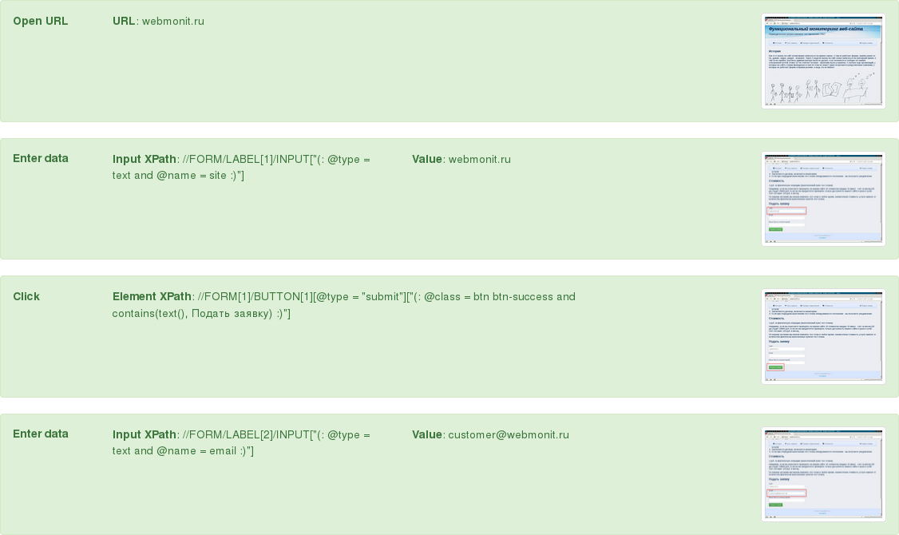

Функциональный мониторинг веб-сайта
Периодическое функциональное тестирование 24x7
Услуги для веб-разработчиков
Аудит сайта, составление тест-плана (если у вас нет ТЗ)
Регресионное тестирование сайта
Функциональный мониторинг сайта
Образец email-отчета

Получить образец отчета
Сайт:
Email:
Ваше Имя (и комментарий):
Образец отчета